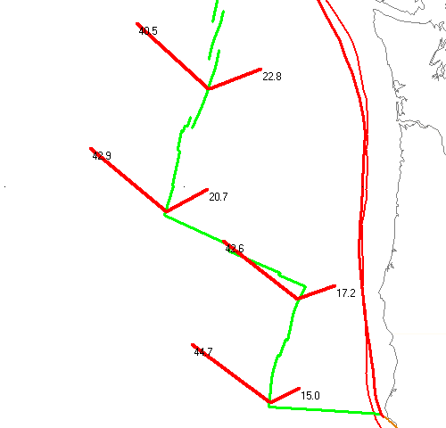
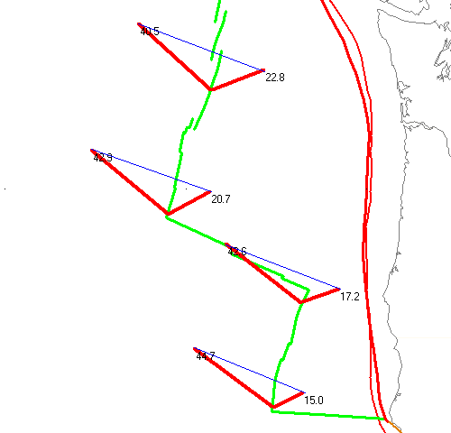
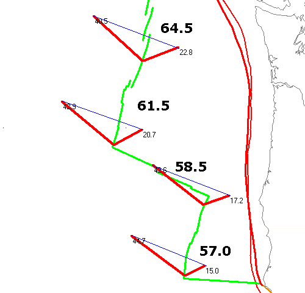
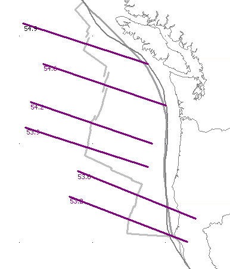

NUVEL absolute motions at four points along the ridge are shown, for both the JdF and Pacific plates. Note that JdF velocities increase northward, and Pacific rates increase southward. JdF vectors are to the east of the ridge, and Pacific to the west.
The absolute velocities are not orthogonal to the ridge creast; both plates have a northward component of motion.
Velocities are correctly scaled and oriented.
 Created in MICRODEM using
Two plates motion option on Plate rotation button on
main MICRODEM toolbar.
Created in MICRODEM using
Two plates motion option on Plate rotation button on
main MICRODEM toolbar.

The memo box shows the magnitude of direction of this vector.

Note that spreading rate increases to the north, so that the Euler pole for JdF-PAC motion must lie to the south.
The spreading vectors are parallel to the transforms and perpendicular to the ridge segments, which was not obvious from the original absolute motions.
The rates here are the full spreading rates.
